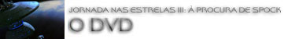
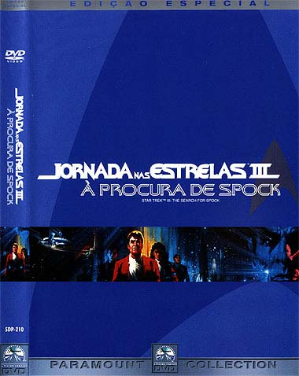
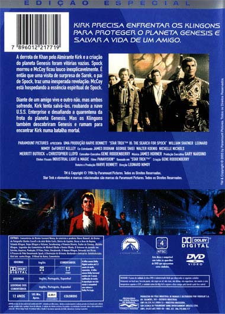
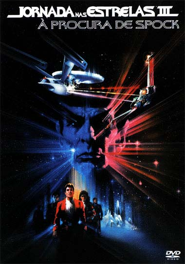
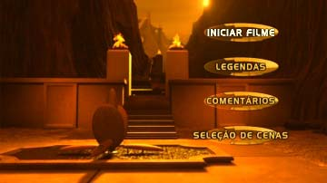
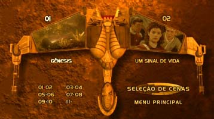
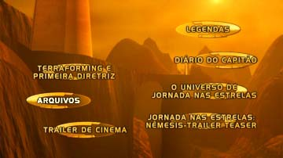
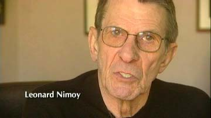
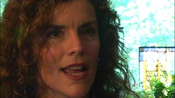
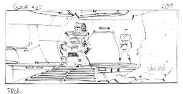

|

STAR TREK III:
THE SEARCH FOR SPOCK
1984


Sinopse
comentada
Comentrios
Citaes
Efeitos
Especiais
Trilha Sonora
Trivia
Ficha
Tcnica
O
DVD
A Morte Tornada
Chance
de Vida

Imagem
A edio simples de "Jornada nas Estrelas III"" em DVD, j anteriormente lanada aqui no Brasil, tinha qualidade excepcional de imagem. Sinceramente no havia muito o que melhorar, mas como essa nova edio especial usa um disco DVD-9 (dual layer, de maior capacidade), a Paramount optou por bem em converter de novo o filme para o padro digital
MPEG-2, dessa vez utilizando menores taxas de compresso. A imagem agora est ligeiramente melhor, com aperfeioamento na nitidez e nas cores. Mas a diferena quase imperceptvel quando comparada ao antigo DVD, salvo utilizando uma TV top de linha com progressive scan.
O filme apresentado em widescreen anamrfico na proporo de 2,35:1 e temos aqui um maravilhoso trabalho da equipe da Paramount. A imagem fantstica, com tima nitidez e cores precisas. Alm disso, a pelcula utilizada est em timo estado de conservao, com quase nenhuma sujeira, arranhes e outras deterioraes devido ao tempo. H um pouco de granulao em algumas cenas mais escuras, mas isso perfeitamente normal em um filme de quase 20 anos de idade.
O destaque fica por conta das cenas finais em Vulcano, onde o fantstico trabalho nos efeitos especiais da ILM em "matte-paintings" somada glria do formato widescreen e a tima qualidade de imagem do DVD propiciam um dos mais belos planetas aliengenas j mostrados no cinema.
Quanto aos demais efeitos especiais, cabe aqui uma ressalva. Como o DVD mostra o filme em resoluo e nitidez muito superiores ao VHS, muitos "defeitos especiais" antes ocultos se mostram agora visveis demais. Em praticamente todas as cenas em que h naves espaciais podemos ver o frame da pelcula resultante da sobreposio de imagens, ou seja, podemos ver o recorte da pelcula que compe a imagem das naves. Isso distrai um pouco a ateno e quebra o clima do filme, pois ficamos prestando ateno nas imperfeies dos efeitos.


Som
A trilha de udio em Dolby Digital idntica utilizada previamente no DVD simples do mesmo filme.
Antes de "Jornada nas Estrelas III", a Paramount j havia remasterizado o udio dos filmes IV e V, mas o resultado, embora satisfatrio, estava longe de impressionar qualquer f. Isso mudou agora.
Temos aqui um dos melhores trabalhos da Paramount no tocante a remixagem do som original estreo para Dolby Digital 5.1. O udio simplesmente arrasador, com tima resoluo e agressividade. O canal do subwoofer bem mais ativo do que nos DVDs dos filmes IV e V, e isso faz uma boa diferena. O melhor exemplo a cena da primeira apario da nave de rapina Klingon que faz a sala inteira tremer.
Quanto aos canais surround, nos DVDs dos filmes IV e V eles eram usados basicamente para realar a trilha sonora. Agora nesse DVD, esses canais so mais ativos e muitos efeitos sonoros so redirecionados a eles, criando uma ambientao mais realista, principalmente na cena da destruio do planeta Gnesis.


Extras
Os menus animados so bonitos e muito bem feitos, representando o terreno do planeta Vulcano a partir da perspectiva da ave de rapina Klingon pousada.



Infelizmente, os extras repetem a qualidade insatisfatria do DVD do segundo filme,
"A Ira de Khan". Como antes, quase a totalidade dos documentrios consiste em entrevistas mal gravadas, com closes absurdamente extremados nos rostos dos entrevistados. Embora o contedo do que os entrevistados falam seja muito interessante, a experincia de quem assiste chata e claustrofbica.
Os extras consistem em:
Comentrios em udio do diretor Leonard Nimoy, do produtor Harve Bennett, do diretor de fotografia Charles Correl e da atriz Robin Curtis
Certamente o contedo aqui ir agradar a todos os fs. Nimoy o mais interessante de se ouvir, pois ele realmente mostra que gostou muito de dirigir o filme (seu primeiro trabalho atrs das cmeras) e tem vrias experincias interessantes para compartilhar. Bennett tambm agradvel de se ouvir, com vrias informaes preciosas. Correl e Curtis aparecem de vez em quando para fazer algum comentrio e tambm se mostram bem informativos.
Textos informativos de Michael Okuda
Aqui reside o poo de tesouros para os fs mais assduos. Exibidos durante o filme, praticamente tudo o que se v ou acontece na tela recebe um texto informativo por Okuda. Todas as informaes so interessantes. Uma passagem que merece ateno ocorre durante a inspeo do almirante na recm-chegada Enterprise, alegando que a nave j era muito velha por contar com vinte anos de idade. Nos textos de Okuda, ele tira sarro da alegao do almirante lembrando que o nibus espacial Columbia tem tambm 20 anos de idade e se mantm na ativa com pleno funcionamento e grande resistncia. Esse comentrio no poderia vir em pior hora; se no fosse trgico, seria cmico.
Dirio do Capito (26 minutos)
Consiste em entrevistas com William Shatner e Leornard Nimoy, basicamente, com aparies espordicas de Bennett, Curtis e Correl. Como dito antes, do modo como foram filmadas, essas entrevistas ficaram muito enfadonhas -- o que um pena, pois o contedo timo. Assistindo s entrevistas com Shatner resta pouca dvida que de que estamos diante de um dos maiores egocntricos de Hollywood. Ele no exatamente chato, mas atribui tudo de bom no filme sua pessoa, chegando at mesmo a alegar que ensinou Nimoy a dirigir durante a srie TJ Rooker. Sobre Nimoy, ele sempre um prazer de ouvir em entrevistas. Ao contrrio de Shatner, o alter-ego de Spock parece ser muito mais simptico como pessoa.


Docas e Aves de Rapina (27 minutos)
Infelizmente h pouqussimas cenas ou fotos da produo, consistindo nas infelizes entrevistas com closes exagerados. frustrante ficar ouvindo os tcnicos da ILM comentando sobre os efeitos e no ver quase nada sobre o que eles esto se referindo.
Falando Klingon (22 minutos)
Comenta sobre a utilizao da lngua Klingon no filme. As informaes so legais, mas um tdio ficar vendo a cara do entrevistado durante mais de 20 minutos.
Trajes Klingon e Vulcano (12 minutos)
Pelo menos mostra um pouco do material utilizado na produo, como os braceletes, jias e outros ornamentos. De todos os documentrios esse o menos chato, por mostrar um pouco mais do que cabeas falantes.
H um documentrio escondido no menu "O Universo de Jornada nas
Estrelas". Selecionando o ornamento central na cpula ela se iluminar. Clicando-a ganha-se acesso ao um curto documentrio sobre a criao do co Klingon de Kruge.
Terraformao e Primeira Diretriz (24 minutos)
Chatssimos minutos com entrevistas que procuram traar um paralelo entre Jornada nas Estrelas e o mundo real, com algumas cenas de arquivo da NASA que j estamos carecas de conhecer. uma tima cura para insnia.
Galeria de fotos
Finalmente temos um extra bem realizado nesse DVD, com uma tima coletnea de fotos e storyboards do filme. Se tivessem intercalado melhor essas fotos com os documentrios, estes ltimos no seriam to chatos.

Trailer orginal de cinema
Igual ao visto no DVD simples de "Jornada nas Estrelas III". Na poca deve ter desagradado a audincia, pois mostra demais algumas cenas que deveriam ser surpresas no filme.
Teaser de Nmesis
Deveria ser considerado propaganda enganosa, pois esse teaser muito bom.
Concluindo, a Paramount perdeu mais uma oportunidade de criar um verdadeiro item de colecionador com essa edio com extras irregulares. Depois do fantstico DVD do primeiro filme, a Paramount lanou um DVD deficiente de
"A Ira de Khan" e agora repetiu os mesmos erros com
" Procura de Spock". Felizmente, para a edio especial do quarto filme, a Paramount mudou toda a equipe responsvel pelos extras e quem j viu os discos atestou o retorno do mesmo padro de qualidade do formidvel DVD do primeiro filme da srie.
Ficha Tcnica
Extras: Menu interativo, Seleo de Cena, comentrios do diretor Leonard Nimoy, do produtor Harve Bennett, do diretor de fotografia Charles Correl e da atriz Robin Curtis, texto de Michael Okuda, 6 documentrios, trailer, teaser de
"Nmesis", fotos e storyboards
Vdeo: Widescreen anamrfico (2,35:1)
udio: Ingls (Dolby Digital 5.1 Surround)
Legendas: Ingls, Portugus, Espanhol
Ano de produo: 1984
Durao: 105 minutos
Ano de Lanamento no Brasil (Regio 4): 2003